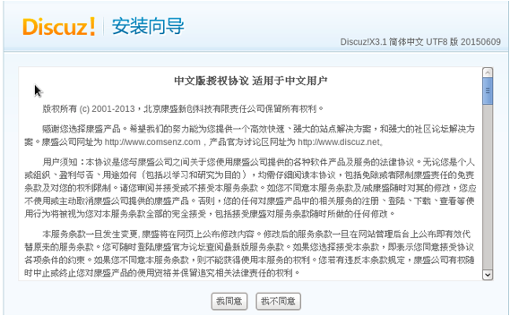
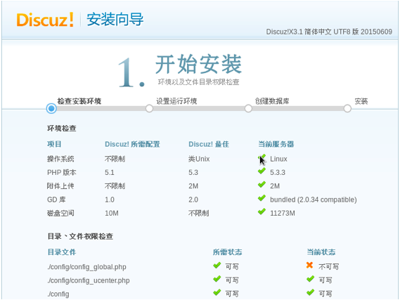

Discus
Discuz是一款免费的论坛管理系统，大量的使用了AJAX，内部有丰富的模板风格。
1、下载discuz软件（https://cn.wordpress.org/download/releases/）
2、为discuz创建一个自己的数据库，我们起名为“discuz”
3、将discuz安装包解压，将其中的upload目录拷贝到apache的网页根目录“/var/www/html/”
|
[root@localhost
html]# tar _xvf discus-3.1.tar
//解压
[root@localhost
html]# cp -r discus-3.1/upload/ discus/
//重命令，这样方便从浏览器打开
|
4、修改discuz中config和data两个目录的权限为777，将config中的两个配置文件复制一份，名字去掉default
|
[root@localhost
html]# chmod -R 777 discuz/data/
[root@localhost
html]# chmod -R 777 discuz/config
[root@localhost
html]# cd discuz/
[root@localhost
discuz]# cp config/config_global_default.php config/config_global.php
[root@localhost
discuz]# cp config/config_ucenter_default.php config/config_ucenter_.php
|
5、开始安装
1）在浏览器输入“127.0.0.1/discus/install”

|
[root@localhost
wordpress]# service httpd restart
停止 httpd：
[确定]
正在启动 httpd：httpd:
Could not reliably determine the server's fully qualified domain name, using
localhost.localdomain for ServerName
[确定]
|
2）环境检查。安装程序会检测所需要的环境，主要是php和mysql版本号，以及各个目录的读写权限。安装之前必须要把所有的“x”都解决掉，例如下图中文件读写权限就有问题，需要修改

3）安装全部discuz
4）设置数据库、管理员
5）安装成功
6）在浏览器输入”127.0.0.1/discuz”就可以访问论坛，使用管理员的账户可以登录
Copyright@david
zhytwj2018@163.com